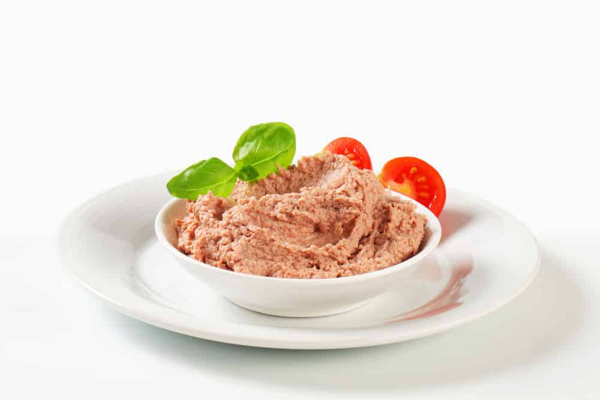
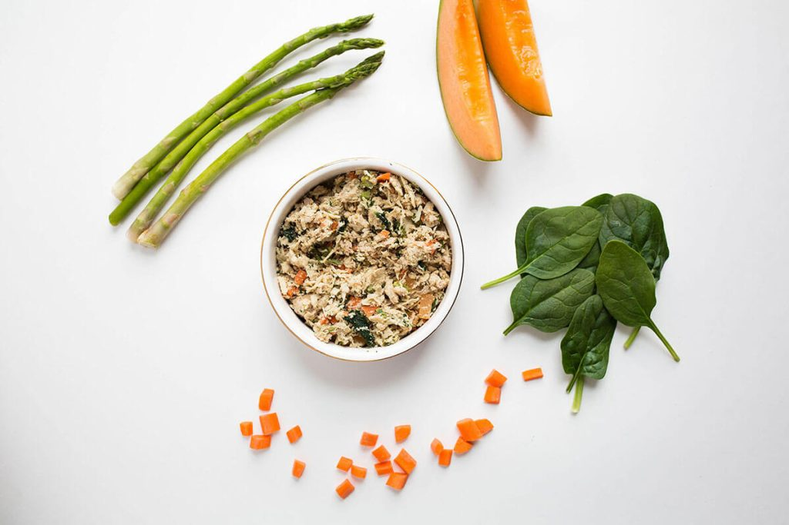
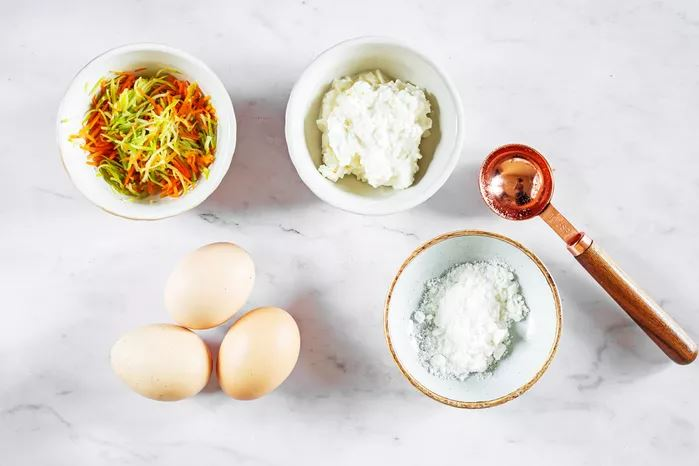
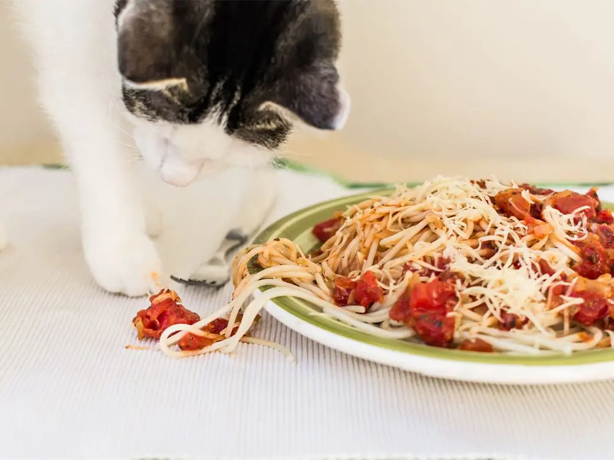
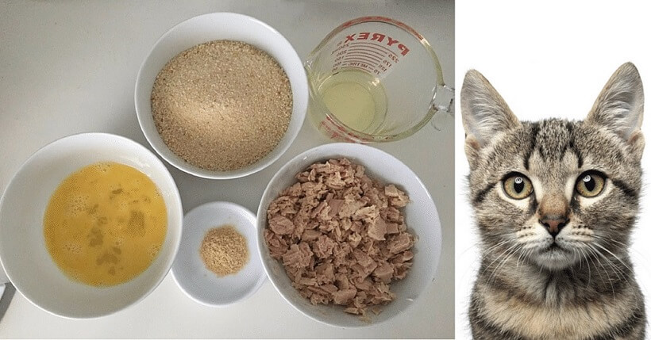
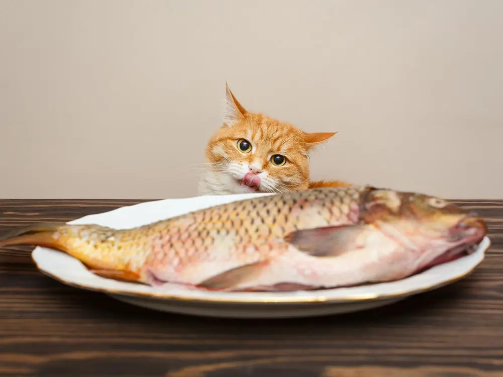
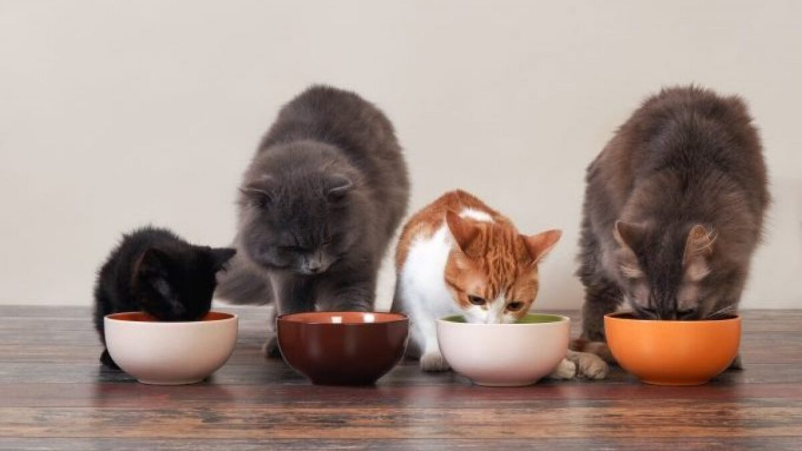

غذای خانگی برای گربه در صورتی که بدونین چه چیزهایی باید براش بپزین و چه چیزهایی رو نه، میتونه منبع خوبی برای تغذیه کامل دوست کوچولوتون باشه و حتی جایگزین غذای خشک هم بشه، ولی چطور تشخیص بدیم که بهترین ترکیبات غذای خانگی گربه چیه؟ آیا غذای خانگی گربه تمام نیازهای تغذیهای گربهمون رو تامین میکنه؟ در ادامه با ما همراه باشید تا در مورد طرز تهیه غذای خانگی گربه بیشتر صحبت کنیم.
چند دستور غذای خانگی برای گربه هم تو این مطلب قرار داده شده تا بتونین درست کردن کردن غذای خانگی برای گربه رو بهراحتی تجربه کنین.

چرا خوبه غذای خانگی به گربه بدیم؟
غذاهای تجاری که به دو صورت غذای خشک و غذای کنسروی وجود دارن فرمولاسیون دقیقی دارن و از نظر مواد غذایی کاملا بالانس شده هستن. به همین دلیل انتخاب راحتتری برای صاحبان گربه به حساب میان.
غذای گربه از طرفی قیمت بالایی هم داره، مخصوصا اگه از برندهای معتبر مثل غذای گربه رویال کنین استفاده کنید هزینه تغذیه گربهتون خیلی سرسامآور میشه. اینجاست که تهیه غذای خانگی گربه ارزان درمیاد و باعث کاهش هزینه نگهداری گربه میشه. این روش بخصوص برای کسانی که چند تا گربه دارن بهصرفهتر و اقتصادیتره.
البته یک سری غذاها مثل یورینری که یک غذای درمانی برای گربه هایی با مشکل مجاری ادراری هست، هم خیلی سخت پیدا میشه و قیمتش هم نسبتا بالاست. به همین دلیل دامپزشکان متخصص پت پرس سعی دارند تا به شما در تهیه غذای خانگی گربه کمک کنن. اگه گربه شما مشکل مجاری ادراری داره حتما مقاله «تهیه غذای گربه یورینری» رو بخونین.
با توجه به گرونی ارز و ممنوعیت واردات غذای گربه، خیلی از محصولاتی که قبلا استفاده میکردیم دیگه در بازار موجود نیست؛ محصولات غذای گربه ایرانی هم اکثرا کیفیت بالایی ندارن. پس در این صورت تهیه غذای خونگی بهترین گزینه به نظر میرسه.
حتی بهترین برندهای غذای گربه هم بالاخره برای سود بیشتر و بحث تجاری، ممکنه از مقدار زیادی کربوهیدرات و سیرکنندهها استفاده کنن که گربه ما خیلی به اونا نیاز نداره و باعث چاقی و اضافه وزنش هم میشه.
غذای خانگی خوشمزهتر، سالمتر و خوش خوراکتره! مطمئنا غذایی که خودتون با عشق درست کردید و از مواد غذایی تازه، سالم و باکیفیت استفاده کردید کیفیت بالاتر و مطمئنتری داره و گربهتون هم متوجه این تفاوت میشه.
چرا خوب نیست غذای خانگی به گربه بدیم؟
شاید براتون سوال پیش بیاد که بالاخره خوبه غذای خانگی به گربه بدم یا خوب نیست؟
اجازه بدین الان توضیح میدم!
غذای خانگی برای گربه با همه خوبی هایی که داره، یه ایراد خیلی بزرگ هم داره.
بزرگ ترین ایراد غذای خانگی اینه که با توجه به نیازهای گربه شما بالانس نشده، یعنی تمام موادی که بدن گربتون نیاز داره در اون به اندازه متعادل وجود ندارن!متاسفانه این ایراد رو نمیشه با سرچ کردن “چگونه برای گربه غذا درست کنیم” و خواندن چند دستور غذایی مشخص در اینترنت حل کرد، چرا؟
چون نیازهای غذایی گربه های مختلف باهم متفاوت هستن و به عوامل مختلفی مثل:
- سن گربه
- نژاد گربه
- عقیم بودن یا نبودن
- وزن گربه
- میزان فعالیتش
- حساسیت های غذاییش
- مشکلاتی که داره
- ذائقه اش و …..
بستگی دارن!
این یعنی خیلی کم پیش میاد دوتا گربه بتونن برنامه غذایی خانگی مشابهی داشته باشن، چه برسه به چند گربه!
در ادامه باهام همراه باشید تا چند دستور غذایی خانگی رو باهم مرور کنیم و بعد بهتون میگم برای رفع این مشکل بزرگ چه راه حلی براتون دارمچطوری برای گربه ام آشپزی کنم؟ (طرز تهیه غذای خانگی برای گربه)
برای درست کردن غذای گربه خانگی کافیه ۳ مرحله زیر رو پیش بگیرید:
- گرفتن یک یا چند دستور غذایی سالم به همراه وزن دقیق مواد غذایی مورد استفاده که بر اساس ویژگی های گربه خودتون باید نوشته بشه (جلوتر نحوه این کارو توضیح میدم!)
- تهیه مواد لازم و پختن غذا برای ۲ هفته و فریز کردن وعده ها
- حالا کافیه هر روز صبح، مقدار غذای خانگی اون روز گربه رو از فریزر خارج کنید و در اختیارش بذارید.

چند دستور غذای خانگی بچه گربه و گربه بالغ
در این قسمت، ۶ دستور غذایی جذاب و خوشمزه برای گربه و بچه گربه رو آماده کردیم فقط توجه داشته باشید که:
و پیشنهاد میکنیم برای دریافت بهترین نتیجه از تاثیر غذای خانگی بچه گربه در رشدش، حتماً از مشورت دامپزشک و برنامه مخصوص غذایی استفاده کنین!
۲ دستور غذای خانگی برای بچه گربه
غذای بچه گربه یکی از مهم ترین بخش ها برای سلامتیشه. برای همین بعد از پرداختن به غذاهای خانگی بچه گربه به سراغ غذای خانگی گربه بالغ هم میریم.
۱.صبحانه خانگی بچه گربه
مواد لازم:
- ۱ قاشق غذاخوری شیر خشک بدون چربی
- ۳ عدد تخم مرغ متوسط
- ۳ قاشق غذاخوری پنیر کوتیج
- ۲ قاشق غذاخوری سبزیجات (رنده شده)
طرز تهیه صبحانه خانگی بچه گربه:
- پودر شیر را با مقدار کمی آب با هم مخلوط کنین.
- تخم مرغها را اضافه کنید و خوب هم بزنین.
- مخلوط را در یک ماهیتابه نچسب کوچک بریزید و روی حرارت متوسط رو به پایین بپزین تا پخته شود.
- سپس اون رو مثل پنکیک برگردونین و پنیر و سبزیجات را روی نیمی از سطح پخته شده پخش کنید. مثل املت تا بزنید.
- بذارید خنک بشه و بعد لقمه لقمه برشش بزنید که بچه گربه راحت بتونه بخوردش.
۲.ترکیب مرغ و ماهی قطعهای
مواد لازم:
- ۱۰۰ گرم قلب مرغ
- ۵۰ گرم جگر مرغ
- ۵۰ گرم کلیه گاو
- ۲ فنجان آب
- ۱ تخم مرغ
- ۷۰۰ گرم بال مرغ با استخوان
- ۱۰۰ گرم سالمون با استخوان
- ۱ قاشق چایخوری مکمل تورین به صورت پودر
روش تهیه:
- در اولین قدم قلب، جگر، کلیه، بال مرغ و سالمون رو آبپز کنین.
- گوشتهای آبپز شده رو ریز ریز کرده یا داخل چرخ گوشت بریزین.
- بعد تمام مواد رو با هم میکس کنین. چیزی که به دست میاد دقیقاً یه ترکیب شل و ریزریز شدهایه که موادش قابل تفکیک نیست.
- این مواد رو به صورت تکهای کوچیک روی صفحه فر بریزید.
- سینی رو به مدت ۴۰ دقیقه داخل فر بذارین.
- بعد از خنک شدن قابل خوردنه. این غذا رو میتونین تا سه چهار روز داخل فریزر نگه دارین ولی بهتره که غذای خانگی برای بچه گربه همیشه تازه باشه.

۵ دستور غذای خونگی برای گربه
سعی کنین این غذاها رو برای یه روز یا نهایت دو روز درست کنین و از نگهداریشون داخل فریزر و گرم کردن مجدد پرهیز کنین. پختن غذای خونگی برای گربه اونقدرها زمانبر نیست که نتونین روزانه اون رو انجام بدین. نهایت ۳۰ دقیقه از شما وقت میگیره!
۱. طرز تهیه غذای خانگی برای گربه با ماکارونی یا پاستا
مواد لازم:
- ۲ فنجان پاستا
- ۲ عدد فیله ران مرغ
طرز پخت:
- فیلهها رو به مدت ۵ دقیقه تو آب داغ بجوشونین. بعد درش بیارین و بذارین خنک شه. اون وقت ریزشون کنید.
- پاستاها رو بپزین تا نرم بشن و بذارید سرد بشه.
- این دو رو تو غذاساز ترکیب کنین و چند قطره روغن زیتون هم بهش اضافه کنید. حالا بذارین میل کنه.

۲. غذای گربه با گوشت چرخ کرده و برنج
مواد لازم:
- ۱ فنجان گوشت چرخ کرده گاو
- ½ فنجان برنج قهوهای
- ¾ فنجان پنیر خامهای
طرز تهیه غذای خانگی گربه:
- گوشت رو آبپز کنین و برنج رو هم بذارین با آب دم بکشه.
- بعدش هر سه تا مواد رو ترکیب کنین و حسابی هم بزنین.
- حالا میشه خوردش!
بازم تاکید میکنم که میزان مواد گفته شده در این دستورها دقیق نیستن و بر اساس گربه شما بالانس نشدن، پس بهتره مقدار گرم دقیقشون رو دامپزشک تغذیه بر اساس اطلاعات گربه شما مشخص کنه

۳.غذای خونگی گربه با ماهی و برنج
مواد لازم:
- ۲ فنجان ساردین
- ۲/۳ فنجان برنج سفید
- ¼ فنجان جعفری خرد شده
- کمی روغن زیتون یا نارگیل
طرز تهیه غذای گربه:
- ساردین آبپز شده رو تو روغن زیتون یا نارگیل تفت بدین و بعد از خنک شدن ریز ریزشون کنین.
- بعد برنج دم کشیده با آب رو بهش اضافه کنین.
- جعفری رو هم به این ترکیب اضافه کنید.
- بعد هم بذارین غذا با دمای اتاق همدما بشه و بعد اون رو به گربهتون بدین.

۴.غذای خانگی گربه با مرغ (خورشت ترکیبی)
مواد لازم:
- ۱ مرغ کامل
- ۲ فنجان برنج قهوهای
- ۶ ساقه کرفس
- ۸ عدد هویج (خرد شده با پوست)
- ۲ یا ۳ عدد کدو حلوایی
- ۲ یا ۳ عدد کدو سبز
- ۱ عدد کلم بروکلی کوچک
- نصف فنجان لوبیا سبز
طرز پخت این غذا:
- مرغ رو پاک کنین و بعد بذارین آبپز بشه.
- سبزیجات رو تکه تکه کنید و به قابلمه مرغ اضافه کنین.
- حالا برنج رو توش بریزین.
- بذارید انقدری بپزه که تمام مواد نرم بشن.
- حالا مرغ رو از بین این مواد جدا کنین و استخوونهاش رو بیرون بکشید.
- بعد همهی خورشت رو تو مخلوط کن بریزین تا تقریباً له شوند اما نه خیلی زیاد.
- بعدش قابل خوردنه.
- این غذا رو میتونین برای چند روز فریز کنین.
۵. غذا خانگی برای گربههای آلرژیک
مواد لازم:
- ۲ فنجان برنج قهوهای
- ۹۰۰ گرم گوشت بره یا گوسفند بدون چربی
- ۴ قاشق چایخوری استخوان پودر شده (یا ۲۴۰۰ میلی گرم پودر کلسیم یا ۱/۳ قاشق چایخوری پودر پوسته تخم مرغ)
- ۲ قاشق غذاخوری روغن زیتون یا نارگیل
طرز تهیه غذای گربه:
- برنج رو بذارین با آب دم بکشه.
- گوشت رو هم بذارین آبپز بشه.
- بعد بقیه مواد رو بهش اضافه کنین و مخلوطشون کنین تا میکس بشن.
- این غذا رو میتونین تا یه هفته تو فریزر نگه دارین.
شما میتونین از این ۵ دستور غذای خانگی برای گربه هر کدوم رو که بیشتر دوست داشت، به صورت هفتگی براش بپزین. ولی از غذاهای دیگه هم غافل نشین و بذارین به بقیه هم عادت کنه.
چطوری برای گربه ام غذای خانگی بالانس شده درست کنم؟
تا الان یاد گرفتیم چطوری برای گربمون آشپزی کنیم، یه اخطار هم دادیم اونم اینکه اگر یه سری مواد غذایی رو باهم قاطی کنیم و به گربه بدیم سلامتیش رو به خطر میندازیم چون میزان مواد موجود در اون غذا برای سالم ماندن گربه و برطرف کردن نیازهاش مناسب نیستن.
سوال میلیون دلاری این است که: چطوری بفهمم غذای خانگی گربه ای که درست میکنم بالانس شده است؟
جواب: در صورتی دامپزشک متخصص تغذیه دستور غذا رو برای شما بالانس کنه میتونین مطمئن باشین گربتون با خوردن غذای خانگی همیشه سالم میمونه و نیازهاش کاملا برطرف میشه.
جالب شد، حالا دامپزشک متخصص تغذیه رو از کجا پیدا کنم؟
ما در تیم پت پرس سه ساله که به صورت تخصصی روی تغذیه گربه تحقیق و مطالعه میکنیم و میتونیم برای گربه اتی ه برنامه غذایی سالم و بالانس شده تدوین کنیم.
کافیه یکی از پکیج های برنامه غذایی گربه رو سفارش بدی، اطلاعات گربه ات رو برامون بفرستی و صبر کنی تا تیم تغذیه پت پرس برنامه غذایی رو برات تدوین کنه.
این برنامه شامل ۱ تا ۴ دستور غذایی خانگی بالانس شده است و در تمام مدت برنامه هم میتونی با دامپزشک متخصص تغذیه در ارتباط باشی و همه سوالاتت رو بپرسی
چطوری برنامه غذایی بالانس شده رو سفارش بدم؟
برای این کار ۲ راه داری:
راه اول: با نصب اپلیکیشن پت پرس رفتن به قسمت برنامه غذایی میتونی هدف برنامه رو مشخص کرده اطلاعات گربه ات رو وارد کنی. در این مرحله سیستم بهترین پکیج رو با توجه به نیازهای گربه ات بهت پیشنهاد میده.
پس از پرداخت و سفارش پکیج به بخش سوالات تکمیلی هدایت میشی و پس از پاسخ ۴۸ ساعت طول میکشه که تیم تغذیه برنامه رو تدوین کنه و بعد از اون میتونی داخل اپلیکیشن اون رو مطالعه یا دانلود کنی، و از طریق همون اپلیکیشن هم با دکتر تغذیه در ارتباط باشی.
سفارش آسان از طریق اپلیکیشن پت پرس

راه دوم: فرم زیر رو پر کن تا باهات تماس بگیریم و برای دریافت برنامه غذایی راهنمایی ات کنیم.

مقدار غذای مورد نیاز گربهام در روز چقدره؟
به طور کلی مقدار غذای مورد نیاز برای گربه باید بین ۲-۴% وزن بدنش باشه.
اما مقدار غذای روزانه به عوامل مختلفی مثل سن، نژاد، میزان فعالیت و وضعیت سلامتی گربه بستگی داره. همین طور ترکیباتی که تو غذای خانگی برای گربه استفاده میکنید هم در تعیین مقدار غذا تاثیر داره.
مثلا اگه حجم بیشتر غذاش کربوهیدرات باشه و گوشت کمی داشته باشه حتی ۱۰۰ گرم غذا هم نمیتونه تموم نیازهای تغذیهای گربه رو تامین کنه و براش کافی نیست. اما اگه غذای خونگی کاملا براساس دستورالعمل دامپزشک تهیه شده باشه مقدار کمی از اون کاملا برای گربه کافی و مناسبه.
به همین دلیل برای اینکه مقدار دقیق غذای مورد نیاز گربهتون رو مشخص کنید حتما باید با دامپزشک مشورت کنید.
بعد از مدتی هم باید وزن گربهتون رو مدام چک کنید. اگه گربهتون دچار کاهش وزن یا اضافه وزن شد خب، یعنی مقدار غذاش مناسب نبوده و باید کمتر یا بیشترش کنید. اما اگه وزنش متناسب بود و وضعیت گوارش و مدفوعش هم کاملا سالم بود یعنی کارتون رو درست انجام دادید!
شیوه صحیح غذا دادن روزانه به گربه و دفعات اون رو میتونین به صورت جامع تو این مقاله بخونین: غذا دادن به گربه.
شما تا حالا برای گربهتون آشپزی کردید؟
شما غذای خانگی گربه رو ترجیح میدین یا غذای تجاری، چرا؟ شایدم به عنوان کسی که از همون اول برای بچه گربهاش غذای خانگی درست کرده، حرفهایی داشته باشین که ارزش شنیدن داره، بهمون بگین بهترین غذای خانگی برای گربه تون کدوم بوده. تو کامنتها نظر، تجربیات و سوالات خودتون در این مورد رو با ما در میون بگذارید. ما در اسرع وقت به سوالات شما پاسخ میدیم.


ببخشید گربه نیمرو هم میتونه بخوره آیا؟
سلام من یک گربه پرشین همالین دارم دوماهه هس و خیلی شیطون موقع ادرار و یا دفع مدفوعش کمی از خاک ظرفشو میخوره البته از اولی که گرفتمش این عادتو داشت غذا بهش مخلوط سینه مرغ ابپز و سیب زمینی ابپز و کمی هویچ ابپز با مخلوطه ماست میدم ایا خوبه یا نه؟و اینکه چطوری مقعدشو تمیز کنم اصلا نمیذاره؟؟؟
سلام شیما جان
گربت با احتمال زیادی دچار کمبود تغذیه ای هست. باید خیلی اصولی براش برنامه تغذیه نوشته شه
میتونی از ما کمک بگیری برنامه تغذیه ای گربه
جالب و مفید بود
میشه چند دستور غذایی هم بدید؟
فقط توضیح دادید که
ما الان نمی دونین حالا مثلا فلفل دلمه برای گربه خوبه، چیکارش کنیم؟
ممنون😊
سلام آرینا جان
فلفل دلمه ای رو هم به صورت پخته و هم به صورت خام میتونید توی غذای دلبنداتون استفاده کنید
دستورغذایی چیزیه که حتما باید مناسب با هر حیوون تنظیم شه وگرنه باعث عوارض بدی میشه به همین خاطر ما تیم تغذیه داریم و میتونید به بخش برنامه غذایی گربه مراجعه کنید
آیا برای گربه ها تخم مرغی که با آب آبپز شده موردی دارد و سوال دیگر نیمرو هم ضرر دارد؟
سلام آرتیمان جان
تخم مرغ آبپز ضرری نداره ولی بهتره که فقط سفیده رو بهش بدید
نیمرو هم اگر کم روغن باشه ایرادی نداره ولی بهتره همون آبپز رو بدی
سلام گربه من پلک سومش اومده روی چشمش باد نکرده فقط اومده جلو چکار کنیم؟
سلام ابوالفضل عزیز،
پلک سوم گربه ها موقع استراحت و خواب میاد روی چشمشون، اگه پلک سومش ملتهب یا قرمزه یا تمام مدت روی چشمشه لازمه برای معاینه حضوری به بیمارستان دامپزشکی مراجعه کنین.
سلام من یه گربه دارم فقط گردن مرغ میخوره لب به هیچی جز اون نمیزنه چکار کنیم غذا های دیگه هم بخوره؟
سلام ابوالفضل عزیز،
گردن مرغ و استخون اصلا غذای مناسبی برای سگو گربه نیستن. لازمه با مواردی مثل کنسرو، بستنی گربه و حتی غذای خونگی (برای مثال ترکیبی از سینه مرغ پخته بهم همراه آب مرغ، هویج، برنج یا سیب زمینی پخته برای اکثر گربه ها خوشمزه هست) رژیم غذاییشو اصلاح کنین. همکارمون میتونن در زمینه برنامه غذای خونگی هم راهنماییتون کنن:
دریافت برنامه و دستور غذای خانگی گربه از دامپزشک (با توجه به ویژگی های گربه)
عالی هستن مقاله ها عااااالی 👏👍من کتاب جامع گربه رو خریداری کردم واقعا مطالب مفید هستن برای من🌺🙂
سلام تارا جان،
ممنون که نظرتون رو با ما به اشتراک گذاشتین.
گربه من نژادش پرشین هست حدود دو ماه پیش متوجه این شدم که تعداد دفعات ادرارش در روز به ۲ بار رسیده و بکبار مقدار متوسط مدفوع می کند بردمش دکتر ازش آزمایش گرفتن و عکس گرفتن .آزمایش اولیه نشون داد که یه مقدار عفونت داره و بعد مصرف یک دوره آنتی بیوتیک ،عفونت از بین رفت.و گفتن هیچ مشکلی نداره حتی تو عکس هم گفتن هیچ مشکلی نداره ولی روده اش مدفوع زیاده که به خاطر یبوست هست و یه دارو دادن.با استفاده از اون دارو خیلی مدفوعش بیشتر شد ولی بازم پیش میاد ۲ روز مدفوع نکنه.نمیدونم باز ببرمش دکتر یا صبر کنم؟دکتر بردم میگه چیزیش نیست به مرور خوب میشه ولی من نگرانم
سلام مهدی عزیز،
تا نهایتا ۲ روز گفته شده مشکل جدی نیست اگه مدفوع نکنن. برای رفع مشکل یبوستش غیر از دارویی که پزشکش تجویز کردن میتونین نظارت داشته باشین که در طول روز آب کافی به بدنش میرسه (حالا یا مستقیما خود آب یا مواد غذایی آبدار) میزان فیبر غذای خشکش رو بررسی کنین تا گوارشش رو به کار بندازه. درکنار اینا فعالیت داشتنش هم به کار کردن گوارشش کمک میکنه. مناسب بودن خاک، ظرف خاک و محل دستشوییش رو هم کنترل کنین.
عالی خانم مظاهری من پرشین کت سوپر فلت دارم غذای خونگی که براش درست میکنم یه دونه سیب زمینی متوسط، چهار تا گردن مرغ، یه بند انگشت گوشت گاو ، دو قاشق برنج ،یه دونه کوچک هویج، بیست تا دونه نخود سبز ، پنج عدد میگو میذارم دقیقأ با آب چهار ساعتی خوب میجوشه آب استخوان گردن کامل در میاد میره تو مواد بعد استخوانهای گردن را جدا میکنم مابقی مخلفات را با چرخ گوشت دو بار چرخ میکنم غذاش نباید زیاد آبدار باشه بصورت خمیری باید باشه بعد در یک ظرف بصورت صاف پخش میکنم با چاقو قالبهای دو بند انگشتی در میارم میذارم فریزر هر روز یه قالب در میارم میذار یخچال نرم شد بهش میدم برای این غذا هول میزنه با لذت فراوون میخوره قرص ویتامین دکتر کلاودرز برای هر کیلو وزن گربه ام یه دونه میدم که الان بالای سه کیلوست روزی سه تا میدم گرون شده ولی به نظرم لازمه غذای خشک خارجی رویال کیلین فوق العاده گرون شده غذای خشک ترکیه ایی واسش پیدا کردم هم غذای خشک گوشت داره هم غذای خشک مرغ یه مقدار هم غذای خشک ایرانی برند خوب هم پیدا کردم هر سه را قاطی میکنم میریزم تو ظرفش بصورت تفریحی روزانه میخوره هر از گاهی میره سراغش روزی نزدیک صد تا صدو پنجاه گرم میخوره اینطور غذاهای خشک وقتی قاطی باشه طعم های مختلفی داره خیلی دوست داره البته میگند نباید قاطی کنیم معده اش بهم میخوره اما غذای خشک ایرانی ترکی ترکیبش به نظرم مشکلی برای گربه ام ایجاد نکرده مالت ایرانی را براتون توصیه نمی کنم نمی دونم چی توش میزنند گربه را اسهال میکنه خارجی هم گرونه اگه موهای گربه تون کوتاه است و زود به زود حموم میبریدش و هر روز دو بار برس میزنید بی خیال مالت بشید و اگرنه مالت خارجی بخرید که البته من هنوز زورم نرسیده از نظر مالی بخرم دارم واسش جمع میکنم خخخخخ البته از این لحاظ هم شنیدم غذاهای خشک خارجی مقداری مالت برای دفع موی معده داخلشون هست ببخشید دوستان سلیقه ها متفاوته اما حتمی غذای خشک و تر را باهم به گربه تون بدهید نه اسهال میشه نه یبوست میگیره غذای خشک یه نوع مسواک هم برای دندوناش هست تا اینجای کار که گربه ام هفت ماهشه بزنم به تخته دستشویی اش کاملآ طبیعی آب خوردنش عالی و ریزش مو خیلی کم همه چی اش نرماله البته میدونم میگید درست نیست ولی هفته ای یه بار حموم میبرمش با شامپو بچه گلیسیرین و گواتر فیروز میشورمش اصلأ هم خودش را نمیخواره خیلی هم خوشش میاد بعداز حموم سریع با سشوار خشکش میکنم به این سبک حمام هم عادت کرده از خونه که بهیچ عنوان در نیارید بجز برای واکسن دکتر گربه ها و حتی گربه خودم زیاد اهل بیرون از خونه نیستند استرس میگیرند غیر از اینکه الان کرونا هم هست و هزاران آلودگی یادتون باشه تا هفت ماهگی باید یه بار واسکن هاری ، دو بارثلاث زده شود و دو بار هم انگل تراپی شده باشه ممنون از همه موفق باشید یه چیزی بگم باورتون نمیشه گربه من حتی من را هم بوس میکنه ، گاهی خواب آلودم من را نوازش هم میکنه حتمی میگید خوب با این غذاهایی که بهش میدیم و اینکه دو تا آدم بالغ من و همسرم ۲۴ ساعت مواظبشیم باید هم اینطور باشه خخخخخ راست میگید باورکنید خیلی دوستش دارم به جونم بنده
سلام رامین عزیز،
ممنون که تجربتون رو با ما به اشتراک گذاشتین.
غذای خونگی که درست میکنین از لحاظ ترکیب واقعا عالیه و تو این شرایط که غذا خشک خیلی گرون شده درکنار مولتی ویتامینی که بهش میدین تقریبا همه نیازاشو فراهم میکنه. اگه غذا خشکایی که ترکیب میکنین ز اول ترکیبی بودن و عادت داره بهشون مشکلی پیش نمیاد مگه اینکه رژیمش ناگهانی عوض شده باشه. بعضی غذا خشک و تشویقیا هستن که مالت دارن. شما که انقدر نکاتو برای گربتون رعایت میکنین حیفه بخاطر حموم رفتن زیاد مشکلی براش پیش بیاد چون گفته میشه گربه ها خودشون خودشونو با لیس زدن حمام میکنن و زیاد حموم بردنشون خصوصا که شامپوی مخصوصشونم نیست میتونه در طولانی مدت به پوست و موشون آسیب برسونه.
ممنون باشه چشم سعی میکنم وسواسم را کم کنم زیاد حموم نبرمش خصوصأ اینکه داره هوا هم سرد میشه به ریسک سرماخوردگی بعدش نمیارزه دست شما درد نکنه غذای خشک هم تا امروز مشکلی از نظر ترکیبی براش ایجاد نکرده ولی راست میگید باید جدا جدا بدم هر برندی خاصیت خودشو داره ولی گربه ام جدا جدا نمی خوره ترکیبی دوست داره که میبایست این عادت را ترکش بدم
میشه بگین برند ایرانی و ترکی که پیدا کردین و در کنار غذای خونگی میدین اسماشون چیه